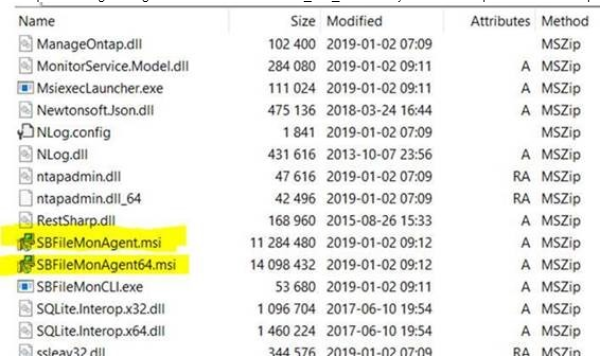

Summary: You are unable to deploy the agent for STEALTHbits (File) Activity Monitor remotely from the console, and there is no standalone download link for the agent.
Issue: You are unable to deploy the agent for STEALTHbits (File) Activity Monitor remotely from the console, and there is no standalone download link for the agent.
Instructions: The agent installer file can be copied to the target machine and used to install the agent manually.
There is a folder containing the agent installers on the machine where the STEALTHbits Activity Monitor console is installed. By default the folder location for the agent installers is C:\Program Files (x86)\File Monitoring\Agents. In that folder you will find x64 and x86 folders which contain the respective versions of the agent installers. The filenames are SBFileMonAgent.msi (32 bit version) and SBFileMonAgent64.msi (64 bit version).
NOTE: If you use WinZip or a similar utility that can open MSI files to view their contents, you can also simply extract SBFileMonAgent.msi or SBFileMonAgent64.msi from the SAM/SFAM MSI file.
Example: finding the agent installer files in SAM_3.1_SBActivityMonitorSetup.msi with WinZip

NOTE: Failure to deploy via the console can indicate issues that need troubleshooting on the machine the agent is being installed on. It may be useful to run the installer with verbose logging from command line, specifying the location of the output log file. An example of how to do this while logging the install log file to c:\temp\SAMinstall.log would be:
msiexec.exe /i SBFileMonAgent.msi /L*V c:\temp\SAMinstall.log
Product: STEALTHbits File Activity Monitor
Module: File Activity Monitor - EMC/Celerra;File Activity Monitor - NetApp;File Activity Monitor - Windows
Versions: 2.5+
Legacy Article ID: 2251